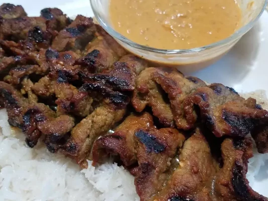

Beef Satay

Beef Satay is one of those dishes that can be a hit or miss at Thai
Restaurants. If you want a sure thing, make it at home! You'll love the
secret for how to make economical beef cuts so succulent you'd swear
they're top shelf meat. These skewers are so good you can eat them plain,
but no one in their right.
Ingredients
- 1/4 cup packed brown sugar
- 1/4 cup fish sauce
- 4 cloves garlic, crushed
- 2 tablespoons minced onion
- 2 tablespoons vegetable oil
- 2 tablespoons soy sauce
- 2 tablespoons ground coriander
- 1 tablespoon grated fresh ginger root
- 1 tablespoon ground cumin
- 1/2 teaspoon ground turmeric
- 1/8 teaspoon cayenner pepper
- 1 -2 inch pice of fresh lemon grass
- 2 pounds beef top sirloin, trimmed
- 4 - 12 inch long metal skewers
Cooking Instructions
-
Whish together brown sugar, fish sauce, garlic, onion, oil, soy sauce,
coriander, ginger, cumin, turmeric, and cayenne pepper in a mixing bowl
until smooth.
-
Bruise lemongrass by hitting it lightly several times with the back of a
large chef's knife; mince lemongrass and add to marinade.
-
Cut beef sirloin into strips about 2 1/2 inches long and 1/8 inch thick.
Stir beef into marinade until beef is completely coated, about 1 minute.
Cover the bowl with plastic wrap and marinate in the refrigerator for 2
to 4 hourse.
- Preheat an outdoor grill for high heat. Lightly oil the grate.
-
Remove beef from marinade and shake off excess marinade. Thread 1/4 of
the meat onto each metal skewers. Discard remaining marinade
-
Arrange skewers on the preheated grill; cook until meat stops sticking
to the grill, 1 to 2 minutes. Flip skewers and continues cooking until
meat is well browned and shows grill marks, 2 to 2 1/2 minutes. Flip
skewers once more; cook until meat is still slightly pink, about 2
minutes. Transfer skewers to a platter; let rest for 2 minutes before
serving.